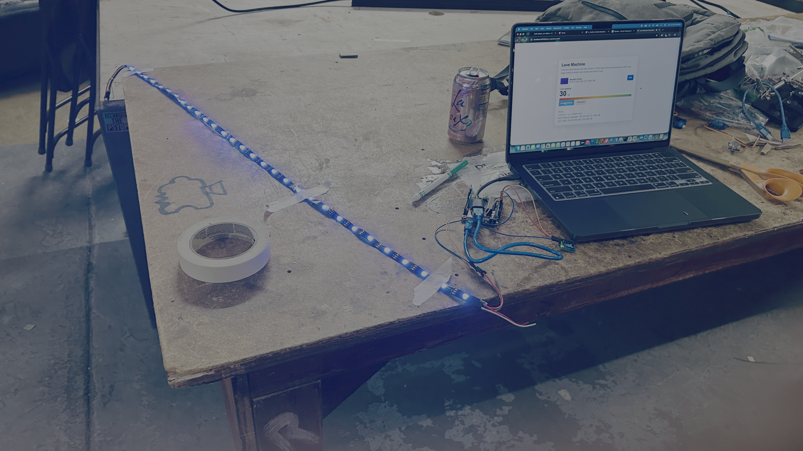
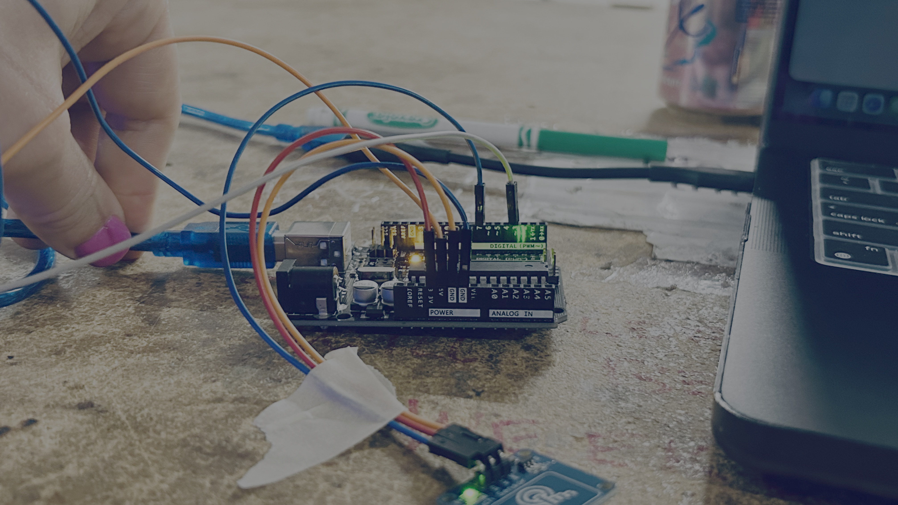
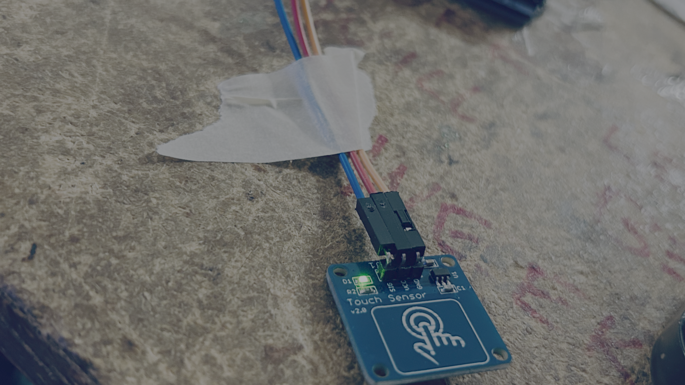
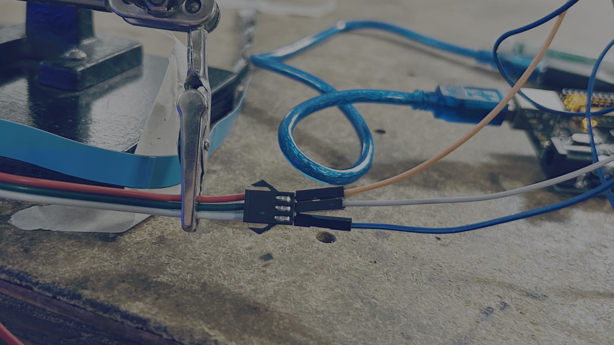

❤️ Love Detector
Project
Can electronics measure love? Probably not... but they can make a pretty convincing light show!
In this project, you'll build a Love Detector using an Arduino, a touch sensor, and an RGB LED strip. Touch the sensor to trigger colorful LED animations while a companion website calculates your totally scientific love score.
Experiment with different touches and see if true love is hiding in your fingertips!

🔌 Wires

| Arduino Pin | Component | Component Pin |
|---|---|---|
| 3V | Touch Sensor | VCC |
| GND | Touch Sensor | GND |
| D7 | Touch Sensor | OUT |
| 5V | RGB LED Strip | 5V |
| GND | RGB LED Strip | GND |
| D3 | RGB LED Strip | DIN |


💻 Code
#include <FastLED.h>
#define LED_PIN 3
#define TOUCH_PIN 7
#define NUM_LEDS 30
#define LED_TYPE WS2812B
#define COLOR_ORDER GRB
#define BRIGHTNESS 20
CRGB leds[NUM_LEDS];
bool lastTouchState = LOW;
String inputLine;
void setStripColor(uint8_t red, uint8_t green, uint8_t blue, uint8_t loveLevel) {
fill_solid(leds, NUM_LEDS, CRGB::Black);
for (uint8_t i = 0; i < loveLevel && i < NUM_LEDS; i++) {
leds[i] = CRGB(red, green, blue);
}
FastLED.show();
}
bool parseRgbCommand(const String& line, uint8_t& red, uint8_t& green, uint8_t& blue, uint8_t& loveLevel) {
if (!line.startsWith("R-G-B")) {
return false;
}
int firstNumber = -1;
for (int i = 0; i < line.length(); i++) {
if (isDigit(line[i])) {
firstNumber = i;
break;
}
}
if (firstNumber < 0) {
return false;
}
int values[4] = {0, 0, 0, NUM_LEDS};
int valueIndex = 0;
int currentValue = 0;
bool readingNumber = false;
for (int i = firstNumber; i <= line.length(); i++) {
char character = i < line.length() ? line[i] : ',';
if (isDigit(character)) {
currentValue = currentValue * 10 + (character - '0');
readingNumber = true;
continue;
}
if (readingNumber) {
if (valueIndex >= 4) {
return false;
}
values[valueIndex] = constrain(currentValue, 0, 255);
valueIndex++;
currentValue = 0;
readingNumber = false;
}
}
if (valueIndex < 3) {
return false;
}
red = values[0];
green = values[1];
blue = values[2];
loveLevel = constrain(values[3], 0, NUM_LEDS);
return true;
}
void handleSerialLine(String line) {
line.trim();
uint8_t red;
uint8_t green;
uint8_t blue;
uint8_t loveLevel;
if (parseRgbCommand(line, red, green, blue, loveLevel)) {
setStripColor(red, green, blue, loveLevel);
Serial.print("OK ");
Serial.print(red);
Serial.print(",");
Serial.print(green);
Serial.print(",");
Serial.print(blue);
Serial.print(" LOVE ");
Serial.println(loveLevel);
} else if (line.length() > 0) {
Serial.print("ERR ");
Serial.println(line);
}
}
void readSerialInput() {
while (Serial.available() > 0) {
char incoming = Serial.read();
if (incoming == '\n') {
handleSerialLine(inputLine);
inputLine = "";
} else if (incoming != '\r') {
inputLine += incoming;
}
}
}
void setup() {
pinMode(TOUCH_PIN, INPUT);
Serial.begin(115200);
FastLED.addLeds<LED_TYPE, LED_PIN, COLOR_ORDER>(leds, NUM_LEDS);
FastLED.setBrightness(BRIGHTNESS);
setStripColor(0, 0, 0, 0);
}
void loop() {
readSerialInput();
bool touchState = digitalRead(TOUCH_PIN);
if (touchState == HIGH && lastTouchState == LOW) {
Serial.println("LOVE");
delay(35);
}
lastTouchState = touchState;
}
Try Changing the Code
Experiment with:
- Different LED colors.
- Faster or slower animations.
- Rainbow effects.
- Sparkle patterns.
- Your own love messages on the website.